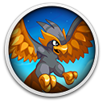

 Coromon
Details
 |
|
| Playtime | Not Played |
| Last Activity | Never |
| Added | 11/8/2024 0:10:07 |
| Modified | 11/8/2024 0:10:44 |
| Completion Status | Not Played |
| Library | Gog |
| Source | GOG |
| Platform | PC (Windows) |
| Release Date | 12/21/2020 |
| Community Score | 68 |
| Critic Score | 82 |
| User Score | |
| Genre | Adventure Indie RPG Strategy |
| Developer | TRAGsoft |
| Publisher | indie.io |
| Feature | Multiplayer Single-Player |
| Links | Steam Official Android YouTube Epic Discord GOG Twitch Wikia iPhone iPad |
| Tag | 2D Adventure Difficult Exploration JRPG Pixel Graphics Retro Role-playing Story Rich Turn-Based |
Description
 The sun begins to dawn on Velua, a new day for the world and a new day for you, a freshly minted Battle Researcher of the global research society known as Lux Solis. It’s your first day and everything goes smoothly until a mysterious force attacks your latest workplace. Build up a squad of Coromon, track down the invaders, and grapple with a rising threat that endangers everyone on Velua!
The sun begins to dawn on Velua, a new day for the world and a new day for you, a freshly minted Battle Researcher of the global research society known as Lux Solis. It’s your first day and everything goes smoothly until a mysterious force attacks your latest workplace. Build up a squad of Coromon, track down the invaders, and grapple with a rising threat that endangers everyone on Velua!
True to our commitment to let you play how you want, the latest update brings color customization for Coromon, fruit-to-cake conversion using the brand new Lux Kitchen, and new Cake recipes to make!


Coromon is all about taming the eponymous wildlife and challenging the rest of the world: other wildlife, trainers, or titanic bosses!
Build a team from more than 100 charming creatures, defined by their elements, traits, and skills. Catch, train then set them loose on your rivals!
Master a stamina-based battle system where every action costs energy, so choose skills and attacks carefully. Deal damage, sap enemy stamina with status effects, or nullify them through dozens of conditions to emerge victorious.
Challenge friends online and see whose Coromon squads are the best of the best.


The first day at Lux Solis is just the first step in a much greater adventure. Soon you’ll be thrust into a story grand in scope and great of importance, as a mysterious, alien threat emerges. It’s up to you to help Lux Solis put a stop to their dastardly designs.
Pursue the antagonists’ trail across six major zones and cities, with dozens of interconnecting routes to explore. Each one brimming with quests, secrets, and items to find.
Explore the furthest reaches of Velua, from frozen glacial caverns to the depths of blistering deserts.
Play a key role throughout a fully-fledged classic JRPG narrative, complete with plot twists, turns, and revelations that not all is as it seems...


Coromon empowers you to create an experience just the way you want.Difficulty is more than just stat changes. Each option changes the fundamental mechanics, making the game as challenging as you want.
Want a stress-free, chill playthrough? Immerse yourself in the story on the easiest setting without hassle, or focus on tactics, number-crunching, and resource management.
Want a more high-stakes challenge? Use the built-in Randomizer and Nuzlocke modes to put fan favorite twists on the creature catching experience.
Create the trainer you want, using hundreds of customizable elements like hair, fashion, and more.
Customize the look of your Coromon! Prefer a Potent’s color to a Perfect’s? Just set the right element.

We're honored to be able to provide Coromon to you, a game we've poured our heart into. Coromon is our tribute to the classics of this RPG sub-genre. While staying loyal to the core gameplay, we wanted to add new features but also keep the iconic retro look, with a modernized pixel art style.
Thank you for checking out Coromon. We hope you will enjoy the game as much as we enjoyed creating it!